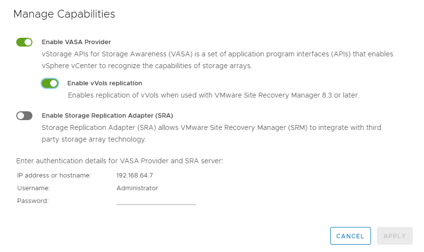
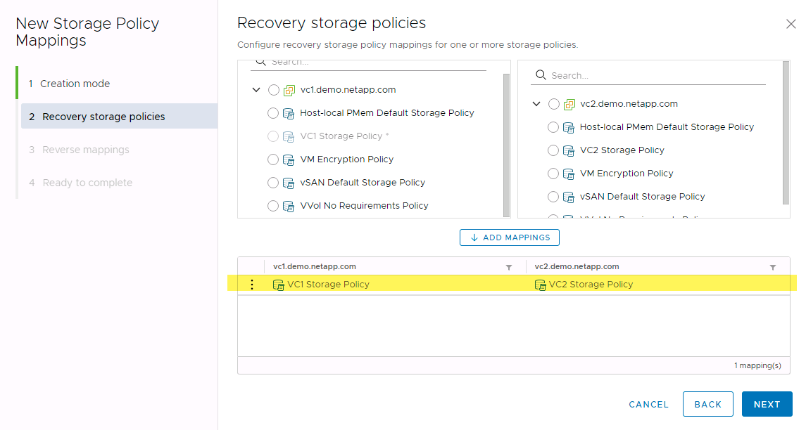
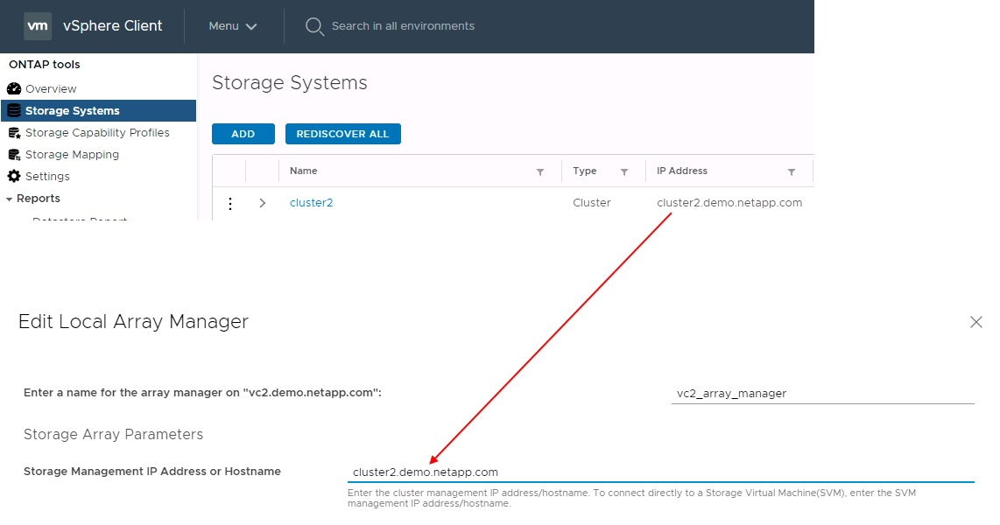

Microsoft SQL Server
Microsoft SQL Server
營運最佳實務做法
 建議變更
建議變更
以下各節概述 VMware SRM 和 ONTAP 儲存設備的最佳作業實務做法。
資料存放區與傳輸協定
-
如有可能、請務必使用ONTAP 「資訊工具」來配置資料存放區和磁碟區。這可確保磁碟區、交會路徑、LUN、igroup、匯出原則、 和其他設定均以相容的方式進行設定。
-
當ONTAP 透過SRA使用陣列型複寫時、SRM支援iSCSI、Fibre Channel及NFS版本3 with VMware®9。SRM不支援使用傳統或vVols資料存放區的NFS 4.1版陣列型複寫。
-
若要確認連線能力、請務必確認您可以從目的地ONTAP 叢集掛載並卸載DR站台上的新測試資料存放區。測試您要用於資料存放區連線的每個傳輸協定。最佳實務做法是使用ONTAP 「VMware工具」來建立測試資料存放區、因為它是依照SRM的指示來執行所有資料存放區自動化作業。
-
每個站台的SAN傳輸協定應該是同質的。您可以混合使用NFS和SAN、但SAN傳輸協定不應在站台內混合使用。例如、您可以在站台A中使用FCP、而在站台B中使用iSCSI您不應在站台A同時使用FCP和iSCSI原因是SRA不會在恢復站台建立混合式igroup、而且SRM不會篩選指派給SRA的啟動器清單。
-
先前的指南建議建立 LIF 至資料位置。也就是說、務必使用實體擁有磁碟區的節點上的LIF來掛載資料存放區。這已不再是ONTAP 現今版本的更新要求。只要可能、而且如果提供叢集範圍的認證、 ONTAP 工具仍會選擇在資料的本機生命體之間平衡負載、但這並不是高可用度或高效能的需求。
-
NetApp ONTAP 9 可設定為自動移除快照、以在自動調整大小無法提供足夠的緊急容量時、在空間不足的情況下保留正常運作時間。此功能的預設設定不會自動刪除 SnapMirror 所建立的快照。如果刪除 SnapMirror 快照、則 NetApp 無法針對受影響的磁碟區進行反向和重新同步複寫。若要防止 ONTAP 刪除 SnapMirror 快照、請設定 Snapshot 自動刪除功能以嘗試。
snap autodelete modify -volume -commitment try
-
Volume 自動調整大小應設為
grow適用於包含 SAN 資料存放區和的磁碟區grow_shrink適用於 NFS 資料存放區。深入瞭解 "設定磁碟區以自動擴充或縮減"。 -
當恢復計畫中的資料存放區數量和保護群組數量減至最少時、 SRM 會發揮最佳效能。因此、您應該考慮在受 SRM 保護的環境中最佳化虛擬機器密度、以因應 RTO 至關重要的環境。
-
使用 Distributed Resource Scheduler （ DRS ）協助平衡受保護和恢復 ESXi 叢集的負載。請記住、如果您計畫進行容錯回復、當您執行重新保護之前受保護的叢集時、就會成為新的恢復叢集。DRS 有助於平衡兩個方向的放置。
-
儘可能避免將 IP 自訂功能與 SRM 搭配使用、因為這樣可能會增加 RTO 。
儲存原則型管理（ SPBM ）和 VVols
從 SRM 8.3 開始、支援使用 vVols 資料存放區的 VM 保護。當在ONTAP 「VMware Tools設定」功能表中啟用vVols複寫時、VASA供應商會將SnapMirror排程公開給VM儲存原則、如下列螢幕擷取畫面所示。
以下範例顯示啟用 vVols 複寫。

以下螢幕快照提供「建立VM儲存原則」精靈中所顯示的SnapMirror排程範例。

支援將故障切換至不同儲存設備的功能。ONTAP例如、系統可能會從ONTAP Select 位於邊緣位置的停止執行、到AFF 核心資料中心的故障轉移。無論儲存設備的相似性為何、您都必須針對啟用複寫的VM儲存原則、設定儲存原則對應和反轉對應、以確保恢復站台所提供的服務符合期望和要求。下列螢幕擷取畫面會強調顯示原則對應範例。

為vVols資料存放區建立複寫的磁碟區
與先前的vVols資料存放區不同、複寫的vVols資料存放區必須從啟用複寫的開始建立、而且必須使用ONTAP 在具有SnapMirror關係的SnapMirror系統上預先建立的磁碟區。這需要預先設定叢集對等和SVM對等等項目。這些活動應由 ONTAP 管理員執行、因為這有助於在多個站台之間管理 ONTAP 系統的人員與主要負責 vSphere 作業的人員之間、嚴格區分責任。
這是vSphere管理員的新要求。由於建立的磁碟區超出ONTAP 了功能性測試工具的範圍、因此在ONTAP 定期排程的重新探索期間之前、系統管理員不會察覺到您所做的變更。因此、當您建立要與vVols搭配使用的Volume或SnapMirror關係時、一律執行重新探索是最佳實務做法。只要在主機或叢集上按一下滑鼠右鍵、然後選取「 NetApp ONTAP 工具」 > 「更新主機和儲存資料」、如下面的螢幕擷取畫面所示。

在vVols和SRM方面、請務必謹慎處理。請勿在同一個vVols資料存放區中混用受保護和未受保護的VM。原因是當您使用SRM容錯移轉至DR站台時、只有屬於保護群組的VM才會在DR中上線。因此、當您重新保護（將SnapMirror從災難恢復還原至正式作業）時、可能會覆寫未容錯移轉的VM、並可能包含寶貴的資料。
關於陣列配對
系統會為每個陣列配對建立陣列管理程式。有了SRM和ONTAP VMware等工具、每個陣列配對都是以SVM的範圍來完成、即使您使用叢集認證資料也是如此。這可讓您根據指派給租戶的SVM進行管理、在租戶之間分割DR工作流程。您可以為指定的叢集建立多個陣列管理員、而且這些管理員可以是非對稱的。您可以在不同ONTAP 的叢集之間進行扇出或扇入。例如、您可以將叢集1上的SVMA和SVM-B複製到叢集2上的SVM-C、叢集3上的SVM-D、或反之。
在SRM中設定陣列配對時、您應該一律以新增至ONTAP 「VMware工具」的相同方式、在SRM中新增這些配對、也就是說、它們必須使用相同的使用者名稱、密碼和管理LIF。這項需求可確保SRA與陣列正常通訊。下列螢幕快照說明ONTAP 叢集在「叢集工具」中的顯示方式、以及如何將其新增至陣列管理程式。

關於複寫群組
複寫群組包含一起還原的虛擬機器邏輯集合。這個功能可讓VASA Provider自動為您建立複寫群組。ONTAP由於SnapMirror複寫是在磁碟區層級進行、因此一個磁碟區中的所有VM都位於相同的複寫群組中。ONTAP
複寫群組的考量因素有多種、以及如何將VM分散到FlexVol 整個流程區。將類似的 VM 分組在同一個磁碟區中、可以提高儲存效率、因為較舊的 ONTAP 系統缺乏 Aggregate 層級的重複資料刪除功能、但群組會增加磁碟區的大小、並減少磁碟區 I/O 並行處理。在現代 ONTAP 系統中、透過在同一個集合體中跨 FlexVol 磁碟區散佈 VM 、以達到最佳的效能與儲存效率平衡、進而運用彙總層級的重複資料刪除技術、並在多個磁碟區之間取得更高的 I/O 平行化。您可以將磁碟區中的虛擬機器一起還原、因為保護群組（如下所述）可以包含多個複寫群組。此配置的缺點是、磁碟區 SnapMirror 不會將 Aggregate 重複資料刪除納入考量、因此可能會多次透過線路傳輸區塊。
複寫群組的最後一個考量是、每個群組的本質都是一個邏輯一致性群組（請勿與SRM一致性群組混淆）。這是因為磁碟區中的所有VM都會使用相同的快照一起傳輸。因此、如果您有必須彼此一致的VM、請考慮將它們儲存在同FlexVol 一個地方。
關於保護群組
保護群組會將虛擬機器和資料存放區定義為群組、這些群組會從受保護的站台一起還原。受保護站台是指在正常穩定狀態作業期間、保護群組中設定的VM存在的位置。請務必注意、雖然SRM可能會針對保護群組顯示多個陣列管理程式、但保護群組無法跨越多個陣列管理程式。因此、您不應該跨不同SVM上的資料存放區跨VM檔案。
關於恢復計畫
恢復計畫會定義在相同程序中恢復哪些保護群組。您可以在相同的恢復計畫中設定多個保護群組。此外、若要啟用更多執行恢復計畫的選項、可在多個恢復計畫中加入單一保護群組。
恢復計畫可讓SRM管理員定義恢復工作流程、將VM指派給優先順序群組、從1（最高）指派至5（最低）、預設值為3（中）。在優先順序群組中、可設定VM以因應相依性。
例如、您的公司可能擁有第 1 層關鍵業務應用程式、而該應用程式則仰賴 Microsoft SQL Server 來執行其資料庫。因此、您決定將虛擬機器置於優先順序群組1。在優先順序群組1中、您開始規劃訂單以啟動服務。您可能希望Microsoft Windows網域控制器在Microsoft SQL伺服器之前開機、而Microsoft SQL伺服器必須在應用程式伺服器之前上線、依此類推。您可以將所有這些 VM 新增至優先順序群組、然後設定相依性、因為相依性僅適用於指定的優先順序群組。
NetApp強烈建議您與應用程式團隊合作、瞭解容錯移轉案例中所需的作業順序、並據此建構您的恢復計畫。
測試容錯移轉
最佳實務做法是、只要對受保護的VM儲存設備組態進行變更、就必須執行測試容錯移轉。如此可確保在發生災難時、 Site Recovery Manager 能夠在預期的 RTO 目標內還原服務。
NetApp也建議偶爾確認來賓應用程式功能、尤其是在重新設定VM儲存設備之後。
執行測試還原作業時、會在ESXi主機上為VM建立私有測試球型網路。不過、此網路不會自動連線至任何實體網路介面卡、因此無法在ESXi主機之間提供連線功能。為了在DR測試期間允許在不同ESXi主機上執行的VM之間進行通訊、會在DR站台的ESXi主機之間建立實體私有網路。若要驗證測試網路是否為私有網路、可以實體分隔測試網路、或使用VLAN或VLAN標記來分隔測試網路。此網路必須與正式作業網路隔離、因為在恢復VM時、無法將其置於可能與實際正式作業系統衝突的IP位址正式作業網路上。在SRM中建立恢復計畫時、所建立的測試網路可選取為私有網路、以便在測試期間連接VM。
在測試通過驗證且不再需要之後、請執行清除作業。執行清除功能會將受保護的VM恢復至初始狀態、並將恢復計畫重設為「就緒」狀態。
容錯移轉考量
除了本指南所述的作業順序之外、還有其他幾個考量因素是站台容錯移轉。
您可能必須面對的一個問題是站台之間的網路差異。某些環境可能會在主要站台和DR站台上使用相同的網路IP位址。這項功能稱為「延伸虛擬LAN（VLAN）」或「延伸網路設定」。其他環境可能需要在主要站台使用不同的網路IP位址（例如不同的VLAN）、相對於DR站台。
VMware提供多種方法來解決此問題。例如VMware NSS-T Data Center等網路虛擬化技術、會從作業環境的第2層到第7層、將整個網路堆疊抽象化、以提供更多可攜的解決方案。深入瞭解 "支援 SRM 的 NSX-T 選項"。
SRM也可讓您在VM恢復時變更其網路組態。此重新設定包括 IP 位址、閘道位址和 DNS 伺服器設定等設定。不同的網路設定會在個別 VM 恢復時套用到它們、您可以在恢復計畫中的 VM 內容設定中指定。
若要設定SRM將不同的網路設定套用到多個VM、而不需要編輯恢復計畫中每個VM的內容、VMware提供一種稱為DR-IP-customizer的工具。如需瞭解如何使用此公用程式、請參閱 "VMware 文件"。
重新保護
恢復之後、恢復站台將成為新的正式作業站台。由於恢復作業中斷了SnapMirror複寫、因此新的正式作業站台不會受到任何未來災難的保護。最佳實務做法是在恢復後立即將新的正式作業站台保護到另一個站台。如果原始正式作業站台可運作、VMware管理員可以將原始正式作業站台當作新的恢復站台、以保護新正式作業站台、有效反轉保護方向。只有在非災難性故障時、才能使用重新保護功能。因此、原始vCenter Server、ESXi伺服器、SRM伺服器及對應的資料庫最終必須可還原。如果無法使用、則必須建立新的保護群組和新的恢復計畫。
容錯回復
容錯回復作業基本上是以不同於以往的方向進行容錯移轉。最佳實務做法是在嘗試容錯回復之前、或是在容錯移轉至原始站台之前、先確認原始站台是否恢復為可接受的功能層級。如果原始站台仍遭入侵、您應該延遲容錯回復、直到故障獲得充分補救為止。
另一個容錯回復最佳做法是在完成重新保護後、在執行最終容錯回復之前、一律執行測試容錯移轉。如此可驗證原始站台上的系統是否能夠完成作業。
重新保護原始網站
在容錯回復之後、您應該向所有相關人員確認他們的服務已恢復正常、然後再重新執行「重新保護」、
在容錯回復後執行重新保護、基本上會使環境回到最初的狀態、並再次從正式作業站台執行SnapMirror複寫至還原站台。